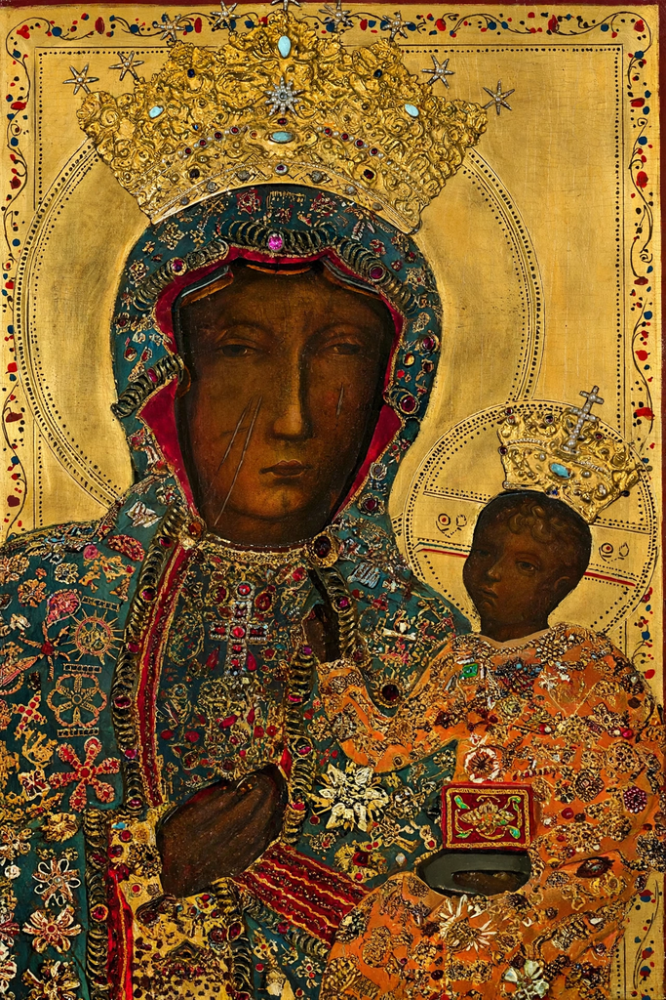

From Wikipedia, the free encyclopedia

The term Black Madonna or Black Virgin refers to statues or paintings in Western Christendom of the Blessed Virgin Mary and the Infant Jesus, where both figures are represented with dark skin. The most famous Black Madonna is the icon of the Black Madonna of Częstochowa in Poland. Examples are found chiefly in Catholic and Orthodox countries, and many are associated with miracles, pilgrimage shrines and particular local devotion. Several hundred such images are documented across Europe, most dating from the 11th to the 15th centuries.
Scholars have proposed many explanations for the dark colouring. In some cases the darkness is accidental — the result of centuries of candle smoke, oxidised lead-based pigments, varnish darkening, or the use of dark wood. In others the dark skin appears intentional, and interpreters have linked the images to the verse of the Song of Songs, "I am black and beautiful" (Nigra sum sed formosa), to depictions of Mary as a woman of the Holy Land, or to survivals of pre-Christian goddess imagery such as Isis nursing Horus. Art historians caution that medieval viewers may not have perceived or categorised skin colour in these images as modern audiences do.
Famous Black Madonnas include Our Lady of Częstochowa in Poland; the Virgin of Montserrat ("La Moreneta") in Catalonia; Our Lady of Einsiedeln in Switzerland; the Black Madonna of Rocamadour and of Le Puy in France; Our Lady of Guadalupe in Mexico (often described as morenita, "the little brown one"); and Our Lady of Candelaria in Tenerife. Many are crowned, credited with protecting their cities in plague and war, and remain major pilgrimage destinations.
In the 20th and 21st centuries the Black Madonna has attracted interest from theologians, feminists and scholars of religion as a symbol of the universality of the sacred and of marginalised peoples' devotion. Pope John Paul II, a native of Poland, had a well-known devotion to the Madonna of Częstochowa, crediting her with his survival of the 1981 assassination attempt.
See also: Mary, mother of Jesus · Icon · Marian devotion